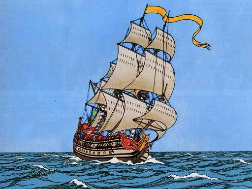

Prisonerien en Angleter
Les Prisons d'Angleterre
England's Jails
|
A propos de la mélodie
Publiée dans "La Paroisse Bretonne" de novembre 1928 par l'abbé François Cadic. A propos du texte - Texte recueilli par l'Abbé François Cadic. Publié dans "La Paroisse Bretonne", novembre 1928 (Dastum 2010, p. 583) - Puis dans "Chants de Chouans" d'Yves Le Diberder et Donatien Laurent (1981) - Egalement recueilli par J-L. Labourdette, cahier 1, folio 108-109, chant n° 58 et publié dans Chants traditionnels vannetais 1902-1905, 2005,p. 128-129. - Classification Malrieu: M-0052 "E-barzh toulloù-bac’h bro-Saoz", "Dans les prisons d'Angleterre". |
 Mélodie Prizonerien e Bro-saoz Arrangement Christian Souchon (c) 2008 Source: "Chants de Chouans", page 46 |
About the melody
Published in "La Paroisse Bretonne" of November 1928 by Father François Cadic. About the text - Text collected by Father François Cadic. Published in "La Paroisse Bretonne", November 1928 (Dastum 2010, p. 583) - Then in "Chants de Chouans" by Yves Le Diberder and Donatien Laurent (1981). - Also collected by J-L. Labourdette, cahier 1, folio 108-109, song n ° 58 and published in Chants traditionales vannetais 1902-1905, 2005, p. 128-129. - Malrieu classification : M-0052 "E-barzh toulloù-bac’h bro-Saoz", "In the prisons of England". |
|
BRETON (Version KLT)
PRIZONERIEN EN ANGLETER 1. Selaouit, tudigoù yaouank, hag ar re goz ivez, C'hwi a glevo ur sonennik kompozet a nevez. 2. C'hwi a glevo ur sonennik kompozet a nevez. Savet dioc'h daou zen yaouank, fidel en em gare. [1] 3. Savet dioc'h daou zen yaouank, fidel en em gare Ha koutant e oent da vervel an eil e'it egile. 4. Ha koutant e oent da vervel an eil e'it egile. Ha setu i zo aet o daou da servijañ ar roue. [2] 5. An uhellañ fregat oe er rad, hi a oe o hini Int o-deus hi añvet Barlot en divizion lestri. 6. Ema ar fregat barzh ar rad ha prest ma partiañ: Ne ra med gortoz an avel, an amord da largañ. 7. Ne ra med gortoz an avel, an amord da largañ. Gortoz ra c'hoazh ar c'hapiten da baseiñ ar revou. 8. Benn ma 'deus paset ar revou, graet ivez an apel, Eñ e-deus kavet pemzek mank eus ar vartoloded, 9. Ken a lare an akipaj: "Re-se zo fin ased, Ar re-se a chomo er ger, deomp ket sur a zoned." 10. Ar bemzekved deiz hag ar miz hag ar fregat er-maez, Ha d'ar c'hwezeg deiz ar mem miz, kombat doc'h an Anglez. 11. Kriz vije'r galon na ouelje, daoulagad na zaere, 'Weled ar c'hadroù chaviret 'n eil tu hag egile. 12. 'Weled ar c'hadroù chaviret 'n eil tu hag egile. Gweled ar gaez vartoloded riskl a goll o buhez. 13. An Anglez a lar d'an Nasion: "Amen da bavilhon!" "Gwell e ganin moned d'an don, pe boud lazhet gantañ!" 14. Kannit "Ave Maris Stella", ar "Veni Creator", [2] Kalmekeet a oe an avel, kaereet a oe ar mor. 15. Etrezomp-ni, prizonerien, prizon en Angleter A eo pemp bloaz zo, e pep mod, pemp bloaz zo er mizer. [3] 16. Daouzek livr kig bevin salet ha bara brein pouezet A gement en-eus ar skorbut, debriñ biskuit kalet. 17. A-benn ma hor-bo ni lazhet hor punez hag hor c'hwenn, E vo unneg eur mad sonnet, mall voned d'ar verenn. [4] Transcrit par Christian Souchon |
FRANCAIS
LES PRISONS D'ANGLETERRE 1. Ecoutez tous, braves jeunes gens, et vous les vieux aussi, Et vous entendrez un nouveau chant, écrit ces temps-ci. 2. Prêtez l'oreille à ce nouveau chant. Qu'on le chante alentour! On y parle de deux jeunes fidèles en amour. [1] 3. Deux jeunes fidèles en amour: est-il plus beau sujet? Deux jeunes qui seraient morts, l'un pour l'autre, satisfaits. 4. Oui, l'un pour l'autre, remplis d'amour, ils auraient bien péri. Ils voulaient servir le roi, c'est pour ça qu'ils sont partis. [2] 5. Dans la rade, la frégate aux mats les plus hauts attendait. C'est "Parlotte" que ce bateau ces messieurs ont nommé. 6. Au milieu de la rade elle attend prête à prendre la mer, Il suffit d'attendre le vent pour tirer l'ancre en l'air. 7. Pour lever l'ancre on attend le vent, le capitaine aussi Qui doit venir passer la revue, comme il est prescrit. 8. Il est venu passer la revue, procéder à l'appel. Quinze manquaient bien qu'ils soient portés au rôle officiel. 9. Les gens de l'équipage disaient: "Ceux-là sont des malins, Eux, ils sont sûrs de rentrer chez eux. Nous, c'est moins certain!" 10. La frégate, le quinze du mois, vers le large partait Et le seize déjà nous voilà combattant l'Anglais! 11. Cruel qui n'eût point pleuré toutes les larmes de son corps, Voyant les cadres chavirer d'un bord à l'autre bord. 12. D'un bord à l'autre tout chavirait, les malheureux marins Qui risquaient fort d'être noyés, dont approchait la fin. 13. L'Anglais dit aux Républicains: "Amenez le pavillon!" "Nous aimons mieux être tués ou couler par le fond." 14. Chantez "Ave Maris Stella" ou bien "Veni Creator"![2] Le vent s'est calmé, la mer aussi. On aborde au port. 15. Nous voilà donc aux mains des Anglais, dans la même prison. Cela fait cinq ans déjà de misère et d'abandon; [3] 12. Douze livres de viande de bœuf salé, de pain pourri Bien pesé, pour ceux qu'ont le scorbut, d'infâmes biscuits. 13. Quand nous aurons traqué la punaise et la puce à loisir, Onze heures sonneront, nous courrons aller nous nourrir. [4] Traduction Christian Souchon (c) 2012 |
ENGLISH
ENGLAND'S JAILS 1. Come nearer, all, young and old alike, come nearer, all of you, And you shall hear a little song edifying and new! 2. Listen to this little song of mine, composed recently On two young people who loved one another tenderly. [1] 3. Tenderly did they each other love and would have gladly died For one another they would have died and be satisfied. 4. These two would have been so glad to die for one another and They have enlisted to serve the King at sea, to that end. [2] 5. The tallest frigate within the harbour they embarked on, Christened "Parlotte" by the men of the Naval division. 6. Amidst the harbour the frigate lies and she is clear to go, To lift the anchors she's waiting still for the wind to blow. 7. To lift the anchors she's waiting still for the right wind to blow. And for the captain to pass them in review, as you know. 8. He passed them in review when he came, he mustered all the crew, And he found that there were of them fifteen less than was due. 9. Absent from roll call: fifteen. He said "Those are a clever lot For they are sure that they come back home. So far we are not." 10. On the fifteenth of that month the ship has put to sea, all right! On the sixteenth day against the English there was a fight. 11. Hard-hearted were whoever had seen, without shedding a tear, The hull that crumbled from board to board, the frame lying bare. 12. The hull that crumbled from board to board, an awful thing to see, And the poor sailors on the brink to be drowned in the sea. 13. The English said to the Nation's ship: "Time the colours to strike!" "To be sent to the bottom or killed I would rather like." 14. Sing "Ave Maris Stella" and "Veni Creator" once more! [2] The gale has ceased suddenly to hiss, and the sea to roar. 15. We all have been prisoners of war in the same English jail, For five years at least, that have been five years of woe and wail. [3] 16. 12 pounds of salted beef for us all, stale bread thriftily weighed. And for those men who were scurvy-sick tough biscuit was made. 17. Once we have finished chasing the bug and flushing out the flea, 'T will be eleven o'clock and we'll rush for morning tea! [4] Translation: Christian Souchon (c) 2012 |
NOTES:
|
[1] En fait, il n'en est pas clairement question dans la suite de la chanson telle qu'elle est notée par l'Abbé Cadic (pas plus que des "trois jeunes matelots" dans la chanson éponyme).
[2] Ces Bretons s'embarquent "pour servir le roi" et c'est aux chants de l'"Ave Maris Stella" et du "Veni Creator" comme s'ils n'étaient pas sur une frégate de la "Nation" Jacobine, qu'ils bravent les boulets. De même dans le chant "Le 31 du mois d'août", dont on assure qu'il glorifie une victoire de Surcouf au service de Napoléon, les matelots portent un toast "à la santé du roi de France". C'est sans doute cette loyauté entêtée envers un monde révolu, qui fait qu'encore aujourd'hui, la marine de guerre française, où les Bretons sont légion, s'appelle "la Royale". Les chants Jacobites en langue gaélique (ex: An gille don ) fournissent de nombreux exemples de ce genre de loyauté protéiforme. [3] La fraternisation britannico-bretonne chantée dans la ballade du pilote fut vite oubliée avec la Révolution et les guerres napoléoniennes. En dépit de leur attachement à la royauté, les Bretons sont embarqués pour combattre l'Anglais et ils ne boudent pas à la tâche. [4] Le sort des prisonniers n'a rien d'enviable: douze livres de bœuf salé pour tout un équipage de frégate, du pain pourri chichement pesé. Un semblant de préoccupation humanitaire: du biscuit dur pour ceux qui souffrent du scorbut. La tâche principale à laquelle s'adonnent ces malheureux durant la journée est la chasse aux puces et aux punaises. Si bien que le sentiment qui a longtemps prévalu chez les Bretons à l'égard de leurs voisins d'outre-manche fut une prudente prévention. |
[1] In fact these two lovers play no part whatsoever in the rest of the song as it is recorded by the Reverend Cadic (nor do the 'Three young sailor men' in the eponymous Breton ballad).
[2] Those Bretons embark to "serve the king" and sing the church hymns "Ave Maris Stella" and "Veni Creator", as if they were not on board a frigate of the Jacobin Nation, in front of the enemy's cannon. In the same way, in the chantey (in French language) "On the Thirsty-first of August", which allegedly reminds of a victory of Surcouf fighting in Napoleon's navy, the sailors drink the "health of the king of France". This fierce loyalty belonging to a bygone era could explain why, to the present day, the French navy, where the Bretons are so many, is still affectionately known as "La Royale". In the Gaelic Jacobite songs (e.g. An gille don ) there are several instances of this kind of all-encompassing loyalty. [3] The surge of British-Breton brotherly feelings, sung in the Ballad of the Steersman , was soon forgotten when the French Revolution broke out and during the Napoleonic wars. In spite of their loyalty to the king, the Bretons embarked to fight the Saxon foe and they didn't balk at the job. [4] The fate of the prisoners of war was by no means enviable: scarce twelve pounds of salted beef for the whole crew of a frigate, stale bread meanly measured or, due to a pretence of humaneness, hard biscuit for the scurvy-sick. The main occupation of the unfortunate prisoners during the day was chasing the flea and the bug. So that the overall attitude of the Bretons towards their neighbours across the sea has long been determined by cautious prejudice. |
Retour à "Kanaouenn al Levier"
Taolenn